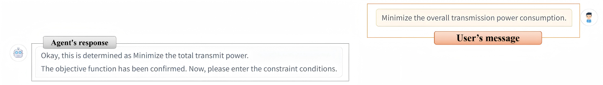
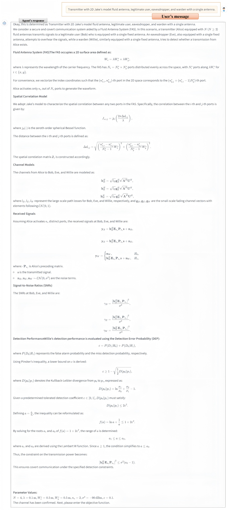
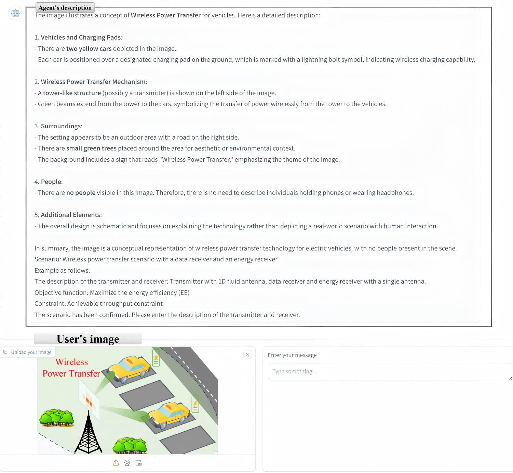
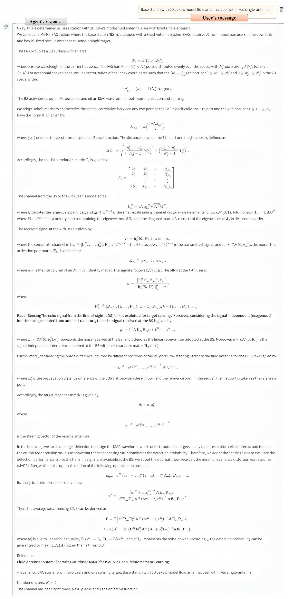

Get Started
üõ† Set up Virtual Environment
For a Python virtual environment using venv (Linux/macOS):
python3 -m venv ./venv # [optional] create virtual environment
source ./venv/bin/activate # [optional] activate virtual environmentFor a Conda virtual environment:
conda create --name myenv python=3.9
conda activate myenv # Activate the Conda environmentüîß Install dependencies
pip install -r requirements.txt üîë Set the OpenAI API key
For Linux/macOS, use the following command in your terminal:
export OPENAI_API_KEY=xxxxxxxxxx # Replace xxxxxxxxxx with your actual API keyFor Windows, use the following command in Command Prompt:
set OPENAI_API_KEY=xxxxxxxxxx # Replace xxxxxxxxxx with your actual API keyüöÄ Run the application
python main.pyüîç Case 1: Multiuser Communications - Minimize the Total Transmit Power
First, we upload an image, and the Agent will provide a description and identify the scene, then guide the user to input the next content.

Then, the user inputs the description of the transmitter and receiver, and the Agent outputs the channel model accordingly, then guides the user to input the objective function.
The user inputs the objective function, and the Agent guides the user to input the constraint condition.
The user inputs the constraint condition, and the Agent provides the final model.
üîç Case 2: Secure Communications - Maximize the secrecy rate
First, we upload an image, and the Agent will provide a description and identify the scene, then guide the user to input the next content.
Then, The user inputs based on the Agent's guidance.
üîç Case 3: Wireless Power Transfer- Maximize the energy efficiency
First, we upload an image, and the Agent will provide a description and identify the scene, then guide the user to input the next content.
Then, The user inputs based on the Agent's guidance.
üîç Case 4: ISAC - Maximize the sum rate
First, we upload an image, and the Agent will provide a description and identify the scene, then guide the user to input the next content.
Then, The user inputs based on the Agent's guidance.
üìù Details
- üëâ Check to learn about Reevo prompt design
- üëâ Check to understand the runtime logs